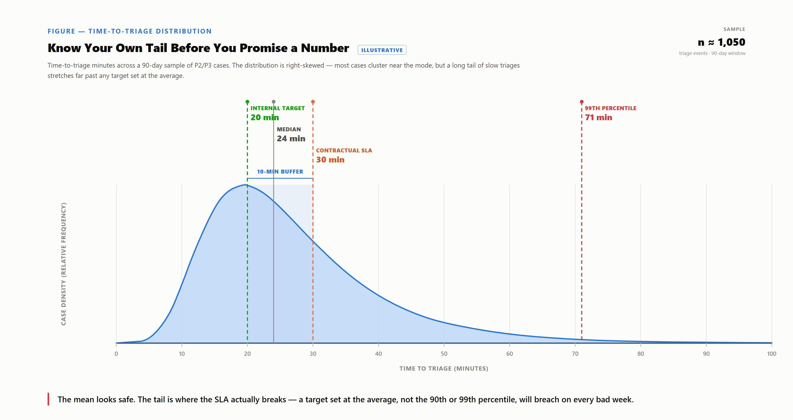

A process that just barely meets its SLA on a normal day has no margin left — the gap between a clean close and a breach is ordinary variance.
No engineer sizes a beam to fail at its expected load; margin absorbs normal variation. A SOC paced exactly to the SLA line has none — a shift handling one P2 can still miss a second landing minutes later, no mistake required. "Usually" is not "will."
The fix is an internal target set inside the contractual number — instrumentation, not a second promise. Crossing it tells a lead to reassign within the current shift, pull from lower-priority queue work, or escalate to a lead or incident commander while it still matters; crossing the contract leaves only the report. Adding headcount is not a lever available in the moment — it is a structural roster-planning decision made ahead of time from percentile data, not a live response option.
Checking a target against the mean or median is close to useless: triage-time distributions are right-skewed, and breaches happen in the tail, not at the median. Percentile-based views of time-to-triage and time-to-closure (e.g., 50th/90th/99th) can be built in SOC dashboards — including Microsoft Sentinel workbooks via KQL's percentile functions — for this reason.

The median already eats four minutes of the buffer before anything goes wrong; the 99th-percentile case blows through the contract regardless of discipline, so that tail needs explicit management.
There is no single correct size: margin is a cost-and-capacity trade-off decided per SOC from its own data, not a vendor deck. Too tight burns attention on cases that would have closed fine; too loose turns variance into breach.